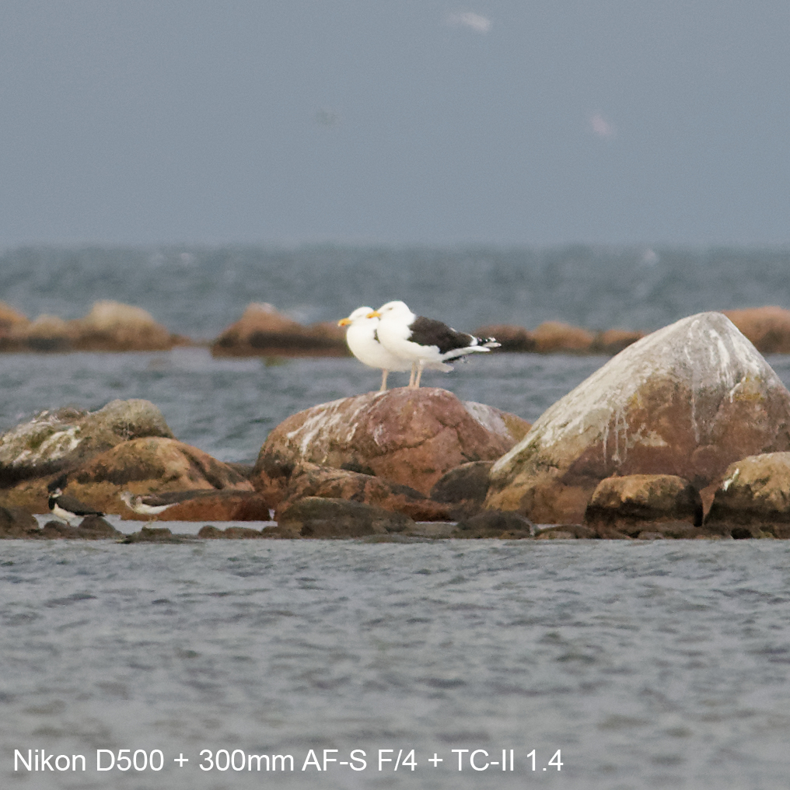

Capturing information
Being a modern birder, it’s quite important to take good photos. Proof of identification is without exception the difference between ecstacy and life-long bitterness over the one that got away. I quite recently got a new phone and I’m curious about its capabilities of taking good photos, both in terms of being able to absorb useful information on a pixel level, but also in terms of taking aesthetic photos of birds and their surroundings. This space is all about exploring this.
Some notes on editing
All photos are shot in RAW format and are afterwards (subjectively) edited to look good. I prefer to shoot in RAW because that way I don’t lock in a certain level of exposure, color balance, noise reduction, sharpening, etc. Comparing unedited RAW files also doesn’t make sense to me because they don’t display what potential the images have. At this point, I edit the phone pictures to look good on my phone, and then edit the camera photos to look like them, within reason. I may do more technical comparisons in the future, but right now I’m settling for this method.
Sony Xperia 5V with Kowa TSN-883 vs Nikon DSLR
Below are a few photos comparing the digiscoping setup to a decent wild-life camera setup; a Nikon D500 + 300mm AF-S F/4 + TC-II Teleconverter


In my opinion, the Xperia picture is clearer, less smudgy, and has more of a 3D feeling than the Nikon D500 picture. I also find the digiscoped picture less annoying to look at - my eyes aren’t as confused about what they’re seeing.